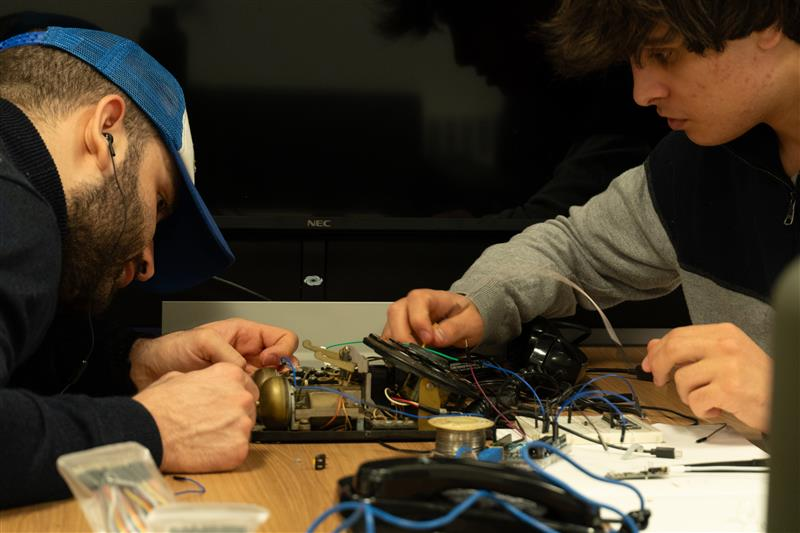
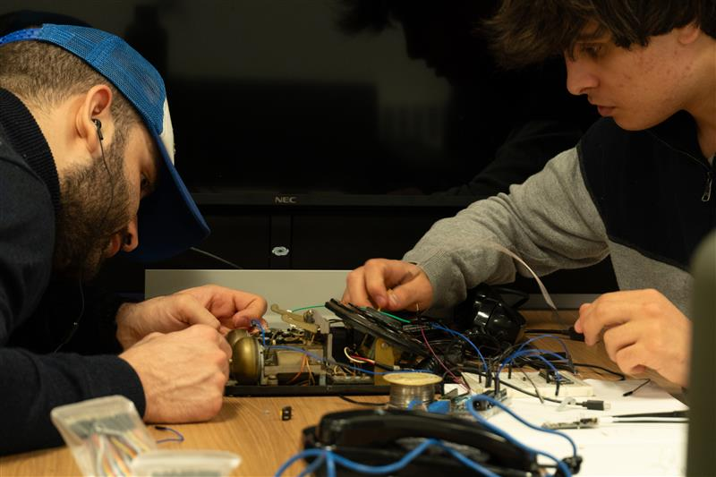

The Installation at World Food Forum 2025
Seeds of Sound as part of The First Supper exhibition in Rome, Italy.


.JPG)


The future of our food systems will be shaped by today's youth, yet young people often face profound challenges engaging with this future. Around the world, they experience disengagement, eco‑anxiety, and lack of opportunities as they confront climate disruption, biodiversity loss and social inequalities. Despite having a central stake, their voices are rarely heard.
The First Supper responds to this urgency by using art, storytelling and participatory practices to engage diverse audiences, support dialogue across communities and spark collective imagination about sustainable food futures. Developed at Bishop's University through a transdisciplinary collaboration across Sustainable Agriculture, Arts Administration, Drama and Psychology, it bridges science and culture to envision inclusive pathways forward.
Seeds of Sound as part of The First Supper exhibition in Rome, Italy.
The First Supper is an interactive booth envisioning food futures in 2050 through "The Table of the Future." Visitors encounter artworks, speculative design and participatory tools that encourage them to connect with food as culture, justice and climate action. During the World Food Forum, youth are invited to co‑create the future rather than remain passive spectators.
Seeds of Sound forms one of the booth's interactive artworks. Participants lift a handset to hear voices and stories about food, culture and farming. This mosaic of perspectives grounds the exhibition in collective memory, reminding us that our futures are rooted in shared experiences and diversity.
Youth visitors can pledge an action for 2050 via a QR‑code website. If they leave an email address, they receive a reminder in 2029 with their promise — connecting today's commitments with tomorrow's accountability.
Participants can handwrite commitments or reflections on artisanal paper imbued with seeds. After the exhibition, the pages can be planted, transforming words into flowers — a living metaphor for nurturing the futures we imagine.
Live conversations with youth from the Ontario Global Youth Action chapter explore what gives them hope for better food futures. These dialogues are recorded and become part of the Seeds of Sound audio archive.
The technical work that brought Seeds of Sound to life — from circuit design to final assembly.


.JPEG)
.JPEG)
.JPEG)
.JPEG)

 


From concept to completion — celebrating the dedication and collaboration that made this project possible.


The First Supper exemplifies the power of collaboration across disciplines — bringing together Computer Science, Fine Arts, Sustainable Agriculture, and Climate Action to create meaningful public engagement.
Imen Djendli (Fine Arts Administration, BU Arts Festival) provided artistic vision and designed the conceptual framework for the interactive installation.
Dr. Vivian Valencia (Associate Professor & Research Chair in Sustainable Agriculture and Climate Action) brought research expertise and thematic direction connecting food futures with storytelling.
The Resonant Five from Bishop's University Computer Science Club engineered, programmed, and built the technical infrastructure that transformed the vision into reality.
Travel funding and support from Dr. Russell Butler (Chair, Computer Science), Dr. Valerio Faraoni (Dean, Natural Sciences & Mathematics), and Mrs. Nanci Chagnon (Secretary to the Dean).
The First Supper demonstrates how art, technology, and community engagement can create powerful platforms for dialogue about our collective futures. Seeds of Sound showcases the potential of student-led engineering to elevate cultural conversations and drive social impact.
We remain open to larger collaborations, research partnerships, and future art-tech installations that explore the intersection of engineering, creativity, and human experience. Whether you're working on climate action, food systems, cultural preservation, or interactive storytelling — we'd love to connect.